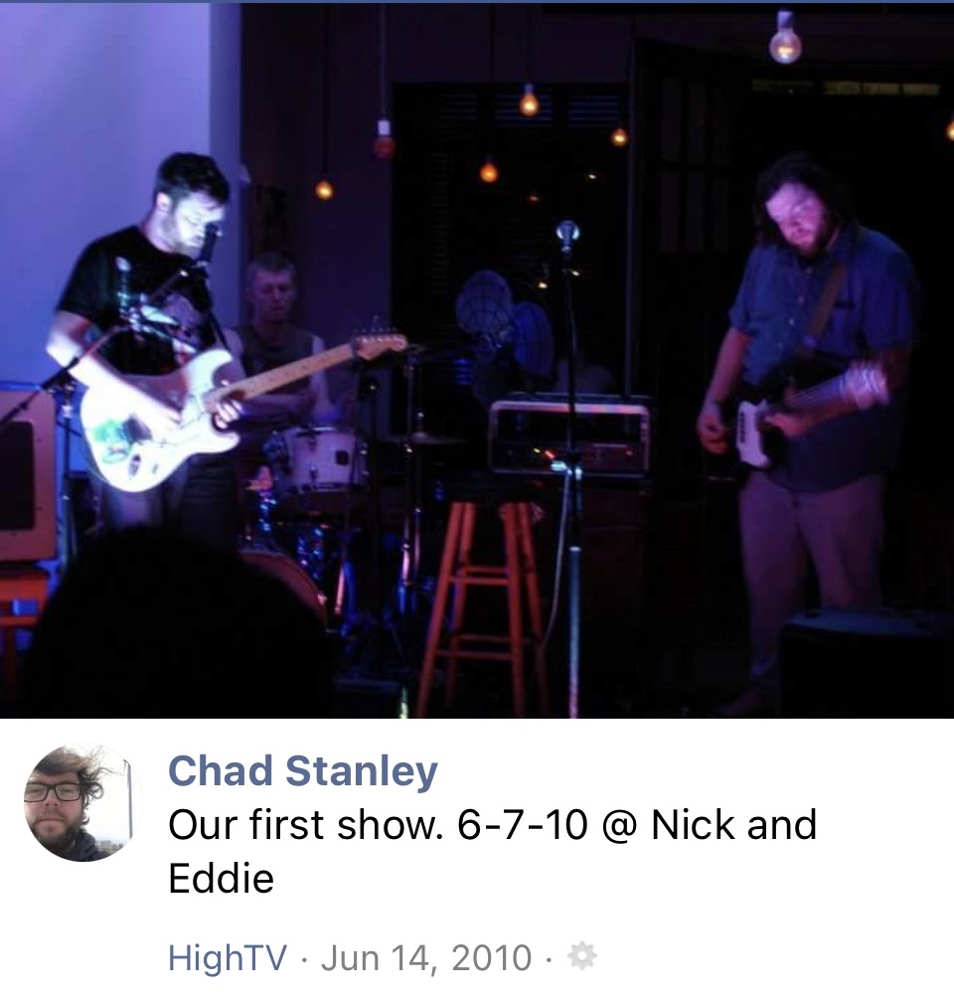

Chad Stanley
("chadly" if you're nasty...)

- Chad Stanley is nickname I got when I first moved to MPLS. A social psuedonym, if you will.
- I replaced my last name with my middle name on FaceBook as a way to get people I didn't really know from high school to stop sending me friend requests. (lol)
- Since then it's become a bit of an alter-ego, somewhat akin to Raoul Duke or Sal Paradise.
- (i still have yet to delve into color pallates)
- (i think it's funny to make that fact painfully obvious in my progression)
- (i also think making the background color barely indistinguishable from plain white is "fun")